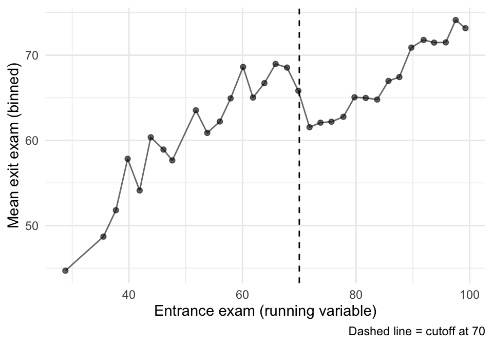
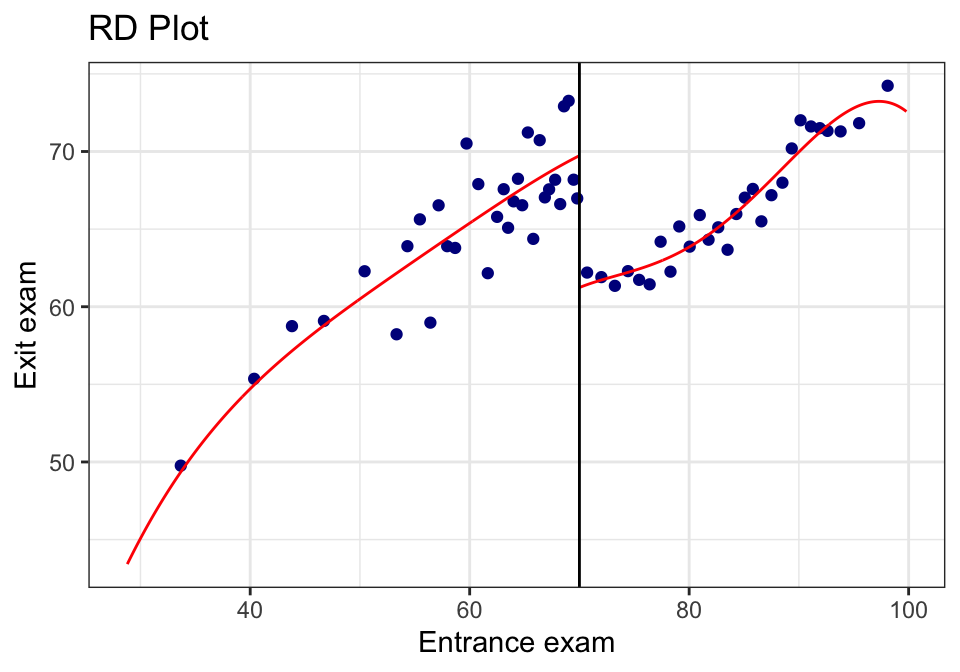
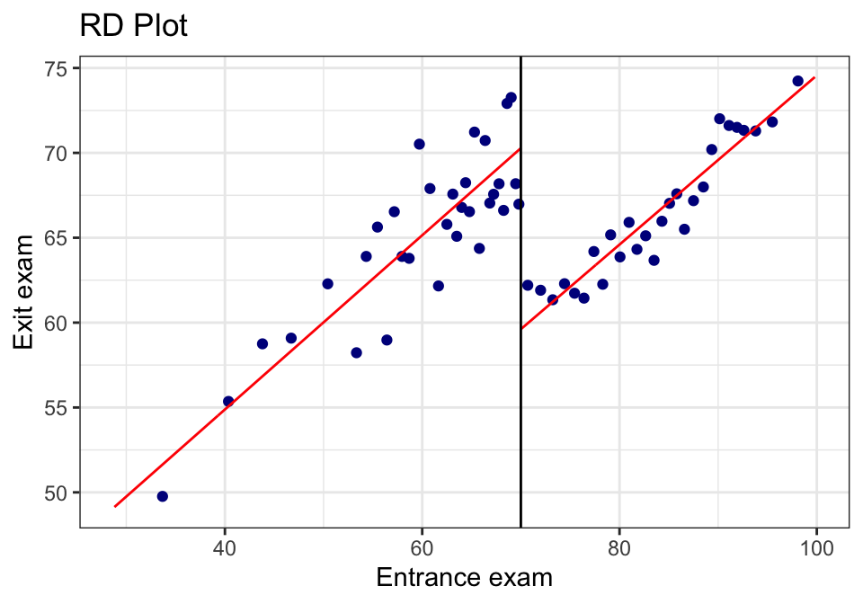
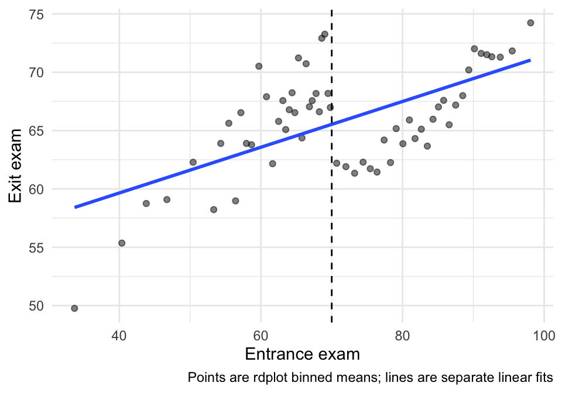
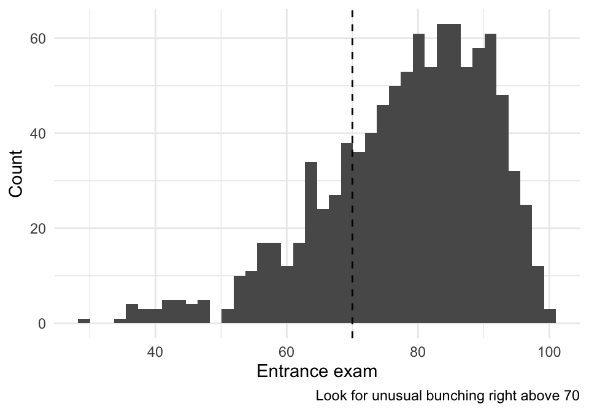
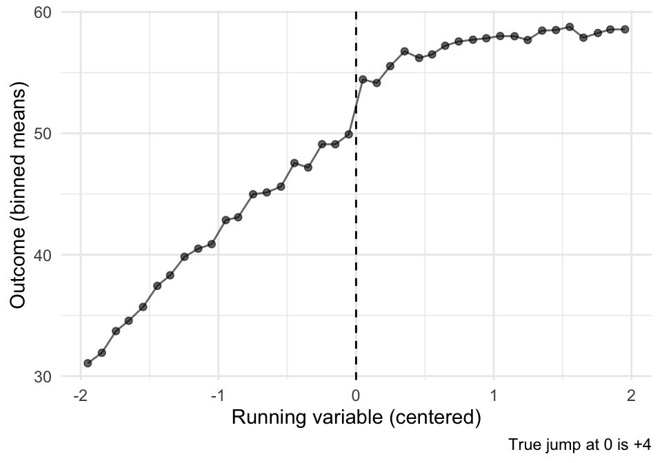

24 Lecture 11: Regression Discontinuity
Slides
- 11 Difference-in-Difference (link)
24.1 Introduction
RDD is what you do when treatment assignment is driven by a threshold rule.
- Running variable:
entrance_exam - Cutoff: \(c = 70\)
- Treatment (sharp): \(D = 1[\text{entrance\_exam} \ge 70]\)
- Outcome:
exit_exam
The key idea is local comparison:
Compare units just below 70 to units just above 70.
24.1.1 The math spine
In a sharp RDD, the estimand is the jump in the conditional mean at the cutoff:
\[ \tau_{RDD}= \lim_{x \downarrow 70} \mathbb{E}[Y \mid X = x]- \lim_{x \uparrow 70} \mathbb{E}[Y \mid X = x] \]
Interpretation: \(\tau_{RDD}\) is the treatment effect right at the cutoff (not necessarily far away from 70).
24.2 Vignette A: Tutoring program (sharp RDD at 70)
In this hypothetical example, students take an entrance exam at the beginning of a school year. Those who score 70 or below are automatically enrolled in a free tutoring program and receive assistance throughout the year. At the end of the school year, students take a final test, or exit exam (with a maximum of 100 points) to measure how much they learned overall. Remember, this is a hypothetical example and tests like this don’t really exist, but just go with it.
library(tidyverse)
library(modelsummary)
library(rdrobust)
library(sjPlot)
library(marginaleffects)
tut <- read_csv("Sample_data/tutoring_program.csv", show_col_types = FALSE) %>%
mutate(
cutoff = 70,
x = entrance_exam,
y = exit_exam,
x_c = x - cutoff,
treat = as.integer(x >= cutoff)
)
tut %>% summarize(min_x = min(x, na.rm=TRUE), max_x = max(x, na.rm=TRUE))## # A tibble: 1 × 2
## min_x max_x
## <dbl> <dbl>
## 1 28.8 99.8## # A tibble: 2 × 2
## treat n
## <int> <int>
## 1 0 237
## 2 1 76324.2.1 A.1 Picture first: binned means around the cutoff
Before we estimate anything, we want to see the discontinuity.
A simple way: bin the running variable and plot mean outcomes in each bin.
## Pick a bin width that gives a readable plot
bin_width <- 2
binned <- tut %>%
mutate(bin = floor((x - min(x, na.rm=TRUE)) / bin_width)) %>%
group_by(bin) %>%
summarize(
x_bin = mean(x, na.rm=TRUE),
y_bin = mean(y, na.rm=TRUE),
.groups = "drop"
)
ggplot(binned, aes(x = x_bin, y = y_bin)) +
geom_point(alpha = 0.6) +
geom_line(alpha = 0.6) +
geom_vline(xintercept = 70, linetype = "dashed") +
labs(x = "Entrance exam (running variable)", y = "Mean exit exam (binned)",
caption = "Dashed line = cutoff at 70") +
theme_minimal()
That plot is suggestive, but it is not an estimator. Now we estimate the jump formally.
24.2.2 A.2 Estimate the discontinuity with rdrobust()
rdrobust() focuses on observations near the cutoff and uses local polynomial regression.
We’ll estimate two versions (same idea, slightly different choices):
- Automatic bandwidth choice (a standard default workflow).
- A fixed bandwidth and linear fit (so students see what changes when we change the “window”).
m1 <- rdrobust(y = tut$y, x = tut$x, c = 70,
kernel = "triangular")
m2 <- rdrobust(y = tut$y, x = tut$x, c = 70,
kernel = "triangular", h = 10, p = 1)
summary(m1)## Sharp RD estimates using local polynomial regression.
##
## Number of Obs. 1000
## BW type mserd
## Kernel Triangular
## VCE method NN
##
## Number of Obs. 237 763
## Eff. Number of Obs. 144 256
## Order est. (p) 1 1
## Order bias (q) 2 2
## BW est. (h) 9.969 9.969
## BW bias (b) 14.661 14.661
## rho (h/b) 0.680 0.680
## Unique Obs. 155 262
##
## =============================================================================
## Method Coef. Std. Err. z P>|z| [ 95% C.I. ]
## =============================================================================
## Conventional -8.578 1.601 -5.359 0.000 [-11.715 , -5.441]
## Robust - - -4.352 0.000 [-12.101 , -4.587]
## =============================================================================
summary(m2)## Sharp RD estimates using local polynomial regression.
##
## Number of Obs. 1000
## BW type Manual
## Kernel Triangular
## VCE method NN
##
## Number of Obs. 237 763
## Eff. Number of Obs. 144 256
## Order est. (p) 1 1
## Order bias (q) 2 2
## BW est. (h) 10.000 10.000
## BW bias (b) 10.000 10.000
## rho (h/b) 1.000 1.000
## Unique Obs. 237 763
##
## =============================================================================
## Method Coef. Std. Err. z P>|z| [ 95% C.I. ]
## =============================================================================
## Conventional -8.581 1.598 -5.369 0.000 [-11.714 , -5.448]
## Robust - - -3.284 0.001 [-12.479 , -3.150]
## =============================================================================
24.2.3 A.3 The built-in RDD plot (rdplot())
This is a convenient diagnostic + presentation plot. It bins the data and overlays the fitted functions on each side.
rdplot(tut$y, tut$x,
c = 70,
x.label = "Entrance exam",
y.label = "Exit exam",
binselect = "qsmvpr")## [1] "Mass points detected in the running variable."
rdplot(tut$y, tut$x,
c = 70,
p = 1,
x.label = "Entrance exam",
y.label = "Exit exam",
binselect = "qsmvpr")## [1] "Mass points detected in the running variable."
24.2.4 A.4 “Same plot, but prettier” (rebuild in ggplot)
Sometimes you want the rdplot bins, but in your own plotting style.
rdplot() returns the binned means it used. We can grab those and build a custom plot.
rd_obj <- rdplot(tut$y, tut$x,
c = 70,
p = 1,
x.label = "Entrance exam",
y.label = "Exit exam",
binselect = "qsmvpr")## [1] "Mass points detected in the running variable."
rd_bins <- tibble(
x_bin = rd_obj$vars_bins$rdplot_mean_bin,
y_bin = rd_obj$vars_bins$rdplot_mean_y
) %>%
mutate(side = if_else(x_bin >= 70, "Above cutoff", "Below cutoff"))
ggplot(rd_bins, aes(x = x_bin, y = y_bin)) +
geom_point(alpha = 0.5) +
geom_smooth(method = "lm", se = FALSE) +
geom_vline(xintercept = 70, linetype = "dashed") +
labs(x = "Entrance exam", y = "Exit exam",
caption = "Points are rdplot binned means; lines are separate linear fits") +
theme_minimal()
24.2.5 A.5 Sensitivity: bandwidth and polynomial order
RDD estimates are local—so choices about how local (bandwidth) matter.
We’ll estimate a small grid and put it in a compact table.
specs <- tribble(
~h, ~p,
5, 1,
10, 1,
15, 1,
10, 2
)
sens <- specs %>%
mutate(
fit = pmap(list(h, p), \(h, p) rdrobust(y=tut$y, x=tut$x, c=70, h=h, p=p, kernel="triangular")),
tau = map_dbl(fit, \(m) m$coef[1]),
se = map_dbl(fit, \(m) m$se[1]),
lo = tau - 1.96*se,
hi = tau + 1.96*se
)
sens %>%
mutate(spec = paste0("h=", h, ", p=", p)) %>%
select(spec, tau, se, lo, hi)## # A tibble: 4 × 5
## spec tau se lo hi
## <chr> <dbl> <dbl> <dbl> <dbl>
## 1 h=5, p=1 -8.20 2.34 -12.8 -3.61
## 2 h=10, p=1 -8.58 1.60 -11.7 -5.45
## 3 h=15, p=1 -8.84 1.30 -11.4 -6.29
## 4 h=10, p=2 -7.81 2.38 -12.5 -3.15Interpretation note:
- If the estimate changes wildly across reasonable bandwidths, that’s a warning sign.
- Usually we want to see the estimate remain qualitatively stable (direction + rough magnitude).
24.2.6 A.6 Credibility checks (what we look for)
24.2.6.1 (1) Sorting/manipulation near the cutoff (visual check)
In a sharp RDD, a big red flag is bunching right above 70 (people gaming the entrance score).
A simple visual check:
tut %>%
ggplot(aes(x = x)) +
geom_histogram(bins = 40) +
geom_vline(xintercept = 70, linetype = "dashed") +
labs(x = "Entrance exam", y = "Count",
caption = "Look for unusual bunching right above 70") +
theme_minimal()
24.2.6.2 (2) Covariate balance near the cutoff (if we have covariates)
If the dataset contains pre-treatment covariates, we can run the same RD logic using each covariate as an outcome. We want covariates to be smooth at 70.
## [1] "id" "tutoring"If you see reasonable pre-treatment covariates here (e.g., demographics), pick one or two and run:
## Example (turn eval=TRUE once you choose real covariates):
## rdrobust(y = tut$some_covariate, x = tut$x, c = 70, kernel = "triangular") |> summary()24.3 Vignette B: A second RDD example (simulated, so we know the truth)
The tutoring example is “real-data messy.” A simulated example is useful because: - we know whether there is a true jump, - we can see how bandwidth and functional form interact.
set.seed(123)
n <- 2000
cutoff <- 0
sim <- tibble(
x = runif(n, -2, 2),
treat = as.integer(x >= cutoff),
## Smooth relationship + a true jump at 0
y = 50 + 6*x - 2*x^2 + 4*treat + rnorm(n, 0, 3)
)
## Binned plot
sim_bins <- sim %>%
mutate(bin = cut(x, breaks = seq(-2, 2, by = 0.1), include.lowest = TRUE)) %>%
group_by(bin) %>%
summarize(x_bin = mean(x), y_bin = mean(y), .groups="drop")
ggplot(sim_bins, aes(x = x_bin, y = y_bin)) +
geom_point(alpha = 0.6) +
geom_line(alpha = 0.6) +
geom_vline(xintercept = 0, linetype = "dashed") +
labs(x = "Running variable (centered)", y = "Outcome (binned means)",
caption = "True jump at 0 is +4") +
theme_minimal()
## rdrobust estimate
sim_m <- rdrobust(y = sim$y, x = sim$x, c = 0, kernel = "triangular")
summary(sim_m)## Sharp RD estimates using local polynomial regression.
##
## Number of Obs. 2000
## BW type mserd
## Kernel Triangular
## VCE method NN
##
## Number of Obs. 1010 990
## Eff. Number of Obs. 361 355
## Order est. (p) 1 1
## Order bias (q) 2 2
## BW est. (h) 0.696 0.696
## BW bias (b) 1.136 1.136
## rho (h/b) 0.613 0.613
## Unique Obs. 1010 990
##
## =============================================================================
## Method Coef. Std. Err. z P>|z| [ 95% C.I. ]
## =============================================================================
## Conventional 3.515 0.476 7.383 0.000 [2.582 , 4.448]
## Robust - - 6.057 0.000 [2.290 , 4.481]
## =============================================================================Interpretation: - Because we built the data with a true jump of +4, a good RDD estimate (with enough data near the cutoff) should recover something close.
24.4 Exercises
- In the tutoring example, identify \(X\), \(c\), \(D\), and \(Y\).
- What does the RDD estimate mean in words? (Be explicit: “for whom” is this causal effect?)
- Compare two bandwidths (e.g., \(h=5\) vs \(h=15\)). What changed in the estimate and the uncertainty?
- What pattern in the histogram around 70 would worry you about manipulation?